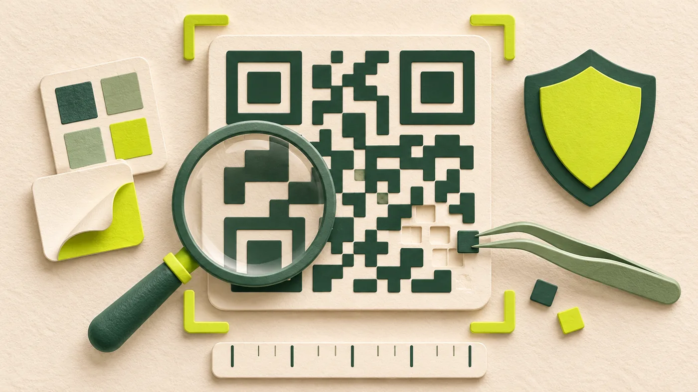

QR GUIDE · อัปเดต 2026-11-14
ขนาด สี และการพิมพ์ QR Code ให้สแกนติด
QR ที่ดูสวยอาจสแกนไม่ได้หากเล็กเกินไป สีใกล้กัน หรือมีสิ่งรบกวนรอบลาย การออกแบบที่ดีต้องเริ่มจากสภาพใช้งานจริง ไม่ใช่ดูจากหน้าจอเพียงอย่างเดียว

หลักเรื่องขนาดและระยะ
สำหรับงานถือใกล้มือควรเริ่มประมาณ 25–30 มม. หากสแกนจากไกลต้องขยายตามระยะ กฎใช้งานง่ายคือระยะสแกนต่อความกว้าง QR ประมาณ 10:1 เช่น สแกนที่ 1 เมตร ควรเริ่มทดสอบที่กว้างราว 10 ซม. แล้วปรับตามกล้องและแสงจริง
สีและพื้นที่ว่าง
- ใช้ลายสีเข้มบนพื้นสว่าง
- หลีกเลี่ยงพื้นโปร่งหรือภาพที่มีรายละเอียดด้านหลัง
- เว้นขอบว่างหรือ Quiet Zone รอบ QR อย่างน้อย 4 ช่องของลาย
- อย่ากลับสีเป็นลายสว่างบนพื้นเข้มโดยไม่ทดสอบหลายอุปกรณ์
ไฟล์สำหรับพิมพ์
ดาวน์โหลดความละเอียดสูงกว่าขนาดใช้งานจริง หลีกเลี่ยงการยืดภาพแบบผิดสัดส่วน และพิมพ์ตัวอย่างด้วยวัสดุจริง เพราะกระดาษมัน แผ่นอะคริลิก และหน้าจอที่สว่างมากอาจเกิดแสงสะท้อน
เช็กลิสต์ก่อนนำไปใช้
- อัตราส่วนภาพไม่ถูกยืด
- มี Quiet Zone
- สีตัดกันชัด
- ทดสอบจากระยะและแสงจริง